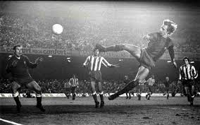
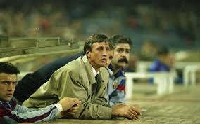

Johan Cruyff




Uno de los Mejores Jugadores de Todos los Tiempos.
1947 - Hendrik Johannes Cruyff nació el 25 de abril de 1947 en la calle Linnaeusstraat en Ámsterdam,
y creció en un barrio en las afueras de Ámsterdam, a medio kilómetro del campo del Ajax. Hijo de Hermanus Cornelius Cruyff,
dueño de una tienda de frutas y verduras, y de Petronella Bernarda Draaijer, que ayudaba en la tienda y en casa.
1964 - Debuta como jugador del ajax F.C .
1966 Juegan la final del mudial de fútbol y la pierden frente a Alemania
1973 - El traspaso de Cruyff al Barcelona se convirtió en el más caro en la historia
fútbol hasta ese momento (60 millones de pesetas) y firmó un contrato de 12 000 dólares mensuales.
1979 - Firma por un equipo de la liga de Estados Unidos y se marcha del Barcelona.
1983 - Decide Retirarse del futbol como jugador activo.
1996 - Se retira como entrenador de futbol.
2016 - Muere en la ciudad de barcelona a la edad de 68 años.
2019 - Se le pone su nombre a un estadio en la ciudad de barcelona.